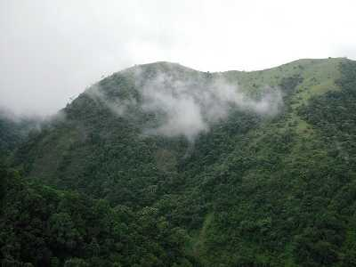

Palakkad, or Palghat, is a city in Kerala, a state in southwestern India.
The 18th-century Palakkad Fort has sturdy battlements, a moat and a Hanuman temple on its grounds.
North, on the Kalpathy River, the 15th-century Viswanatha Swamy Temple is the main venue of the
famous Ratholsavam chariot festival.
Parambikulam Tiger Reserve

Parambikulam Tiger Reserve and Wildlife Sanctuary, located in the Palakkad district of Kerala,
is best known for its constant efforts to preserve the dwindling tiger population.
Surrounding hills and river along with flora and fauna make it the perfect place for a trek and safari.
Silent Valley National Park

The Silent Valley National Park, with its lush green forests and beautiful views of the rich flora and fauna, is a popular destination for nature as well as wildlife lovers all across the globe.
Spread across an area of 89 square kilometres, the Silent Valley National Park is located in the Kundali Hills of the Western Ghats in Kerala in southern India.
Palakkad Fort

The Palakkad Fort in Kerala is a beautiful historical monument that has gently integrated its high walls with its surrounding green gardens.
One of the most well-preserved forts in the state of Kerala, the Palakkad fort was built in the 1766 AD by Hyder Ali and is now a protected monument under the Archaeological Survey of India